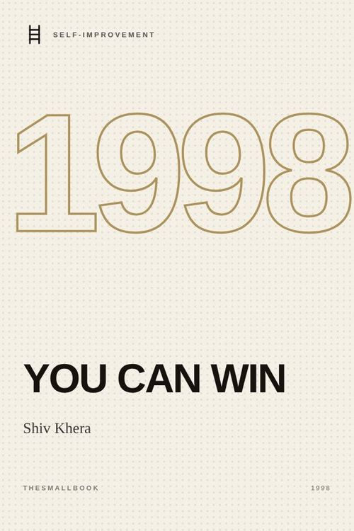

Why Did Takata Fail?
The Airbag Maker That Hid Its Own Explosions
📜 What Happened
Takata's airbag inflators used cheap ammonium nitrate propellant that degraded with humidity - turning life-savers into shrapnel grenades. Internal tests showed ruptures as early as the 2000s; engineers reported data being deleted and reports edited. Instead of redesigning, Takata doubled down for a decade as injuries mounted. Result: the largest automotive recall in history (~100 million inflators), criminal charges, dozens of deaths, and 2017 bankruptcy.
☠️ The Fatal Mistake
Chose propellant cost-savings, then chose concealment over correction at every decision point for 15 years - each cover-up multiplying the eventual bill.
🧠 The Lesson (Free for You)
In safety businesses, the recall you dodge becomes the bankruptcy you file. The cheapest moment to fix a defect is the day you find it - every day after, the interest compounds in lives and lawsuits.
The Antidote Book

Khera's blockbuster - one of India's best-selling English books ever - is deliberately old-school: success as CONSTRUCTION, assembled from attitude (the foundation: his famous calculation that attitude, not aptitude,…
📖 OPEN THE FULL INTERACTIVE BREAKDOWN →Questions people ask about Takata
Why did Takata fail? Chose propellant cost-savings, then chose concealment over correction at every decision point for 15 years - each cover-up multiplying the eventual bill.
How much was lost? 100M recalls; largest auto recall ever; bankruptcy
What is the lesson? In safety businesses, the recall you dodge becomes the bankruptcy you file. The cheapest moment to fix a defect is the day you find it - every day after, the interest compounds in lives and lawsuits.
Takata kyun fail hua? In simple English: Chose propellant cost-savings, then chose concealment over correction at every decision point for 15 years - each cover-up multiplying the eventual bill. The cost was 100M recalls; largest auto recall ever; bankruptcy.
Keep digging
More fraud and scams · Open the full Graveyard
Read the antidote book summary: You Can Win
Related failures
- Why did Synapse fail? 2024 · The Fintech Middleman That Lost Track of $160 Million
- Why did GoMechanic fail? 2023 · India's Car-Repair Unicorn-to-Be Cooked Its Books
- Why did Frank (Charlie Javice) fail? 2023 · Sold JPMorgan 4 Million Fake Students
- Why did Sam Bankman-Fried fail? 2022 · The $32B Empire on a Spreadsheet Nobody Kept
- Why did Purdue Pharma fail? 2021 · The Painkiller That Became a National Emergency
- Why did Ozy Media fail? 2021 · The COO Impersonated a YouTube Exec on a Live Call
Questions this case answers
Searchable, filterable, simple to read - they paid billions; you get the lesson.